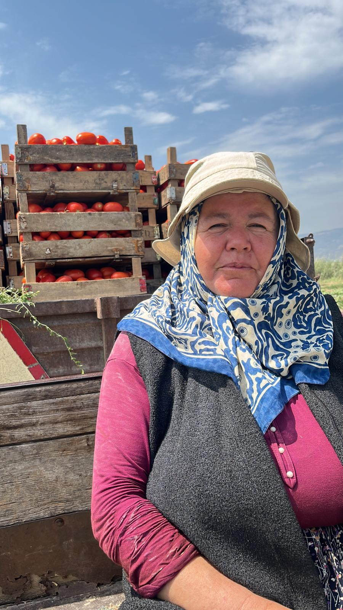
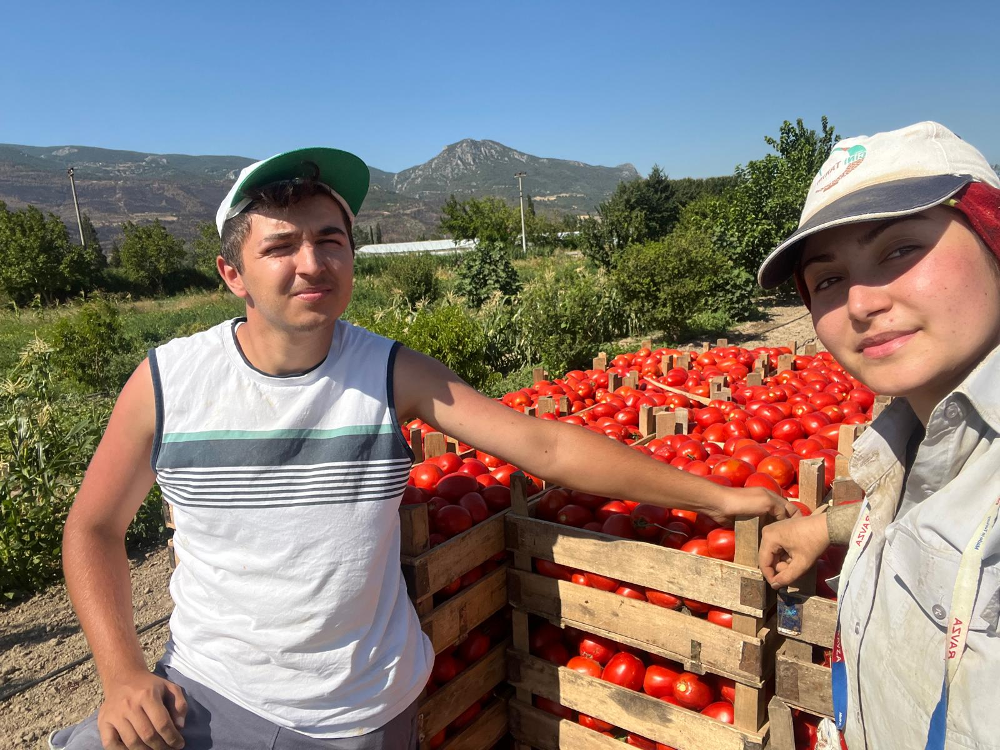

PAMUKOVA DOMATES TARLALARI VE YETİŞTİĞİ KÖYLER
← Ana Sayfaya Dön
Domatesin Pamukova'daki Bereketi
Pamukova ovasının simgelerinden biri olan tarla domatesi, yaz boyunca sofraların ve kışlık salçaların vazgeçilmezidir. Bol güneş alan geniş düzlüklerde ve nehir yatağının getirdiği zengin topraklarda büyüyen domateslerimiz; etli yapısı, ince kabuğu ve o özlenen eski köy domatesi kokusuyla fark yaratır.
Domates En Çok Hangi Köylerde Yetişir?
Pamukova'nın kıpkırmızı ve lezzet dolu tarla domatesleri ağırlıklı olarak şu köylerimizde üretilmektedir:
- Çardak Köyü: Verimli toprak yapısı ve bilinçli tarım teknikleriyle, ovada salçalık ve sofralık domates üretiminin en yüksek kalitede yapıldığı köylerin başında gelir.
- Mekece Köyü: Yaz sıcaklarının erken başlamasıyla birlikte ovada ilk domates hasadının yapıldığı ve piyasaya taze ürün sunulan önemli bir merkezdir.
- Hayrettin Köyü: Geniş tarım arazilerinde tonlarca domates üretimi yapılarak kamyonlarla doğrudan çevre büyük şehirlere ve hallere gönderilir.
- Bacıköy ve Cihadiye: Sakarya Nehri'ne komşu olan bu köylerde toprağın nem dengesi sayesinde domatesler çatlamadan, en sulu ve iri haliyle olgunlaşır.
Domates Tarlalarımızdan Görüntüler
|

|

|
|